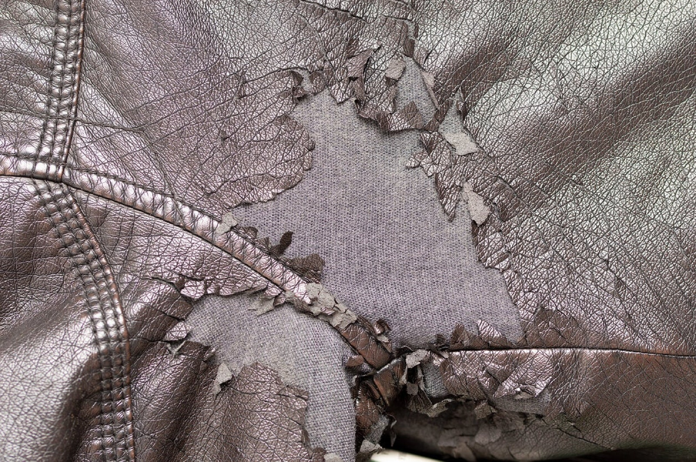
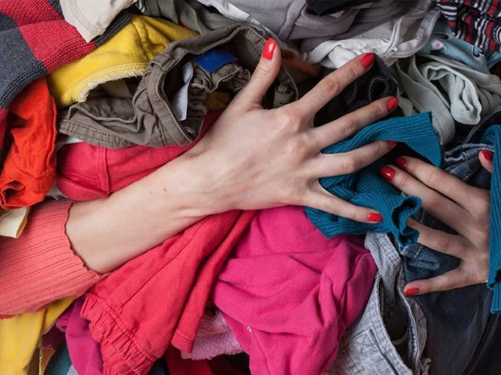

ENTRETENIMIENTO
3 de octubre de 2021 | Por Emanuel Navarro
Ropa gastada
Todos tenemos en nuestro closet algunas prendas de ropa que alguna vez quisimos mucho, pero que sinceramente ya dieron lo que tenían que dar en nuestra vida y ahora más bien aculuman hoyos, manchas u otros defectos por el uso que hacen que ya no podamos portarlas con el mismo orgullo que solíamos tener. Si notas que hay ropa que ya no usas por lo gastada que está, es momento de tirarla. O también puedes aprovechar para convertirla en parte de la oferta de ropa de segunda mano, si consideras que aún está en buen estado.
Productos caducados
Este punto aplica para todo tipo de productos que puedan haber caducado, como medicinas, comida y cosmética. Si la fecha de caducidad ya pasó, con el paso del tiempo solo será incluso más delicado seguirlas consumiendo o aplicando. Así que mejor diles adiós de una vez.
Restos de productos
A veces sucede que acumulamos restos de productos como un poco de jabón, un rastrillo que ya casi no sirve, envases de shampoo vacíos o con muy poco contenido, y que terminamos por aculumar por mucho tiempo sin utilizar. Es mejor tirarlos de una vez si, siendo honestos, no los vamos a aprovechar. Lo que sí, para generar menos basura lo ideal es evitar que tus productos sean utilizados de manera inconsciente. Si te interesa este tema, puedes seguir algunos consejos del estilo de vida Zero Waste y así aprender a producir la menor cantidad de basura posible.
Aparatos que ya no sirvan
Es común que conservemos aparatos que ya no sirven pensando en que los llevaremos a reparar, pero siendo sinceros, cuando pasa el tiempo y aún no lo hacemos es probable que esta no sea una de nuestras prioridades, por lo que lo mejor será deshacernos de ese aparato que seguramente ocupa bastante espacio en tu casa.
Recuerdos que te hacen sentir mal
"A veces guardamos objetos que no sirven por motivos sentimentales, pero con el paso del tiempo, pueden más bien generarnos malestar. Ya sea porque esa persona ya no está o porque nos recuerdan a una etapa de nuestras vidas que echamos de menos. Lo mejor es que en tu casa solo estén objetos que te hagan sentir bien y que se relacionen con tu presente.
Documentos inservibles
Si has acumulado demasiados papeles, verás que muchos de ellos ya no sirven. Por ejemplo, instructivos que nunca consultas, recibos muy viejos, documentos que ya renovaste. Puedes decirles adiós a todos.
Paquetes vacíos
Aunque a veces queremos aprovechar esa caja de zapatos para darle doble uso, también es común que pase el tiempo y no lo hagamos. No acumules, mejor arriésgate a tener que comprar una caja de cartón si algún día la necesitas, pero verás que esto sucede mucho menos a menudo de lo que te imaginas.
Decoración que no te encanta
¿Qué lugar es más íntimo y propio que tu casa? Asegúrate que todo lo que tengas en tu casa como decoración te llene de emoción cada vez que lo ves y no decores por necesidad de llenar espacios, que perderle el miedo a la pared blanca no tiene nada de malo.
Si dentro de la lista de opciones para deshacerse de objetos de tu casa te das cuenta que hay algunos particularmente difíciles para ti de despedir, entonces puedes intentar poner un plazo de tiempo para ver si los reparas, utilizas o aprovechas en ese tiempo. Si no lo haces, ya sabes que es momento de decirle adiós.